Does a Kitsune-Style GPU Dataflow Pipeline Need a 3D-Stacked Queue Fabric?
v2 — the realistic-model report. Every simulator rebuilt around real-silicon measurements of NVIDIA's L2 and on-chip interconnect; the full experiment battery rerun; and the strongest planar competitor — DSM-class SM-side queue SRAM — now modeled (B9). v2 battery: 16 experiments ≈490 simulation runs 4 platforms measured-anchor validation gates Verdict: Conditional support, strengthened
This page is self-contained. The first-generation study (mesh-era model, whose hotspot findings did not survive the realism rebuild) is preserved as the v1 report; §12 here summarizes exactly what changed and why.
Every number on this page is simulated or calculated on a scaled model with assumed parameters anchored to published measurements (NVIDIA does not publish its L2/NoC internals, and no GPU was available for calibration). Trends are cross-validated on three independent simulators; absolute magnitudes are illustrative, not predictions.
Contents
1 · Executive summary
Kitsune (Davies et al., arXiv:2502.18403) makes a GPU run dependent kernel stages at the same time, passing intermediate results through software queues that live in the GPU's shared L2 cache instead of writing them out to DRAM. That is faster — but it turns the L2 cache and the on-chip network into a message fabric on top of their day job as a memory system. This pilot asked: does that dual use ever become the bottleneck, and if so, is dedicated 3D-stacked queue hardware the right fix — or would cheaper 2D ("planar") tricks do?
The most instructive result is methodological: rebuilding the simulators to match real-GPU measurements reversed several v1 conclusions (§12) — a live demonstration of the published warning that under-provisioned simulated NoCs systematically overstate network effects. All superseded findings are kept and labeled on the v1 page, not deleted.
2 · Glossary — every term used on this page
Definitions are written for a reader who knows basic computer architecture but not GPU internals or this project.
The machine
- GPU
- Graphics Processing Unit — a processor built from many small cores that run thousands of threads at once; today mostly used for AI and scientific computing.
- SM (Streaming Multiprocessor)
- One of the GPU's compute clusters. A large GPU has 100+ SMs; each runs many thread groups concurrently. In our scaled model there are 16 SM endpoints (v2 model).
- CTA (Cooperative Thread Array)
- NVIDIA's name for a thread block: a group of threads scheduled onto one SM as a unit. Kitsune builds its pipelines out of CTAs — some CTAs are "producer stages", others "consumer stages".
- L2 cache
- The GPU's large last-level on-chip memory cache (tens of MB on real GPUs; 8 MiB in our scaled model), shared by all SMs. It is divided into slices (address- partitioned sections) and each slice into banks (independently accessible sub-arrays, each serving ~1 access at a time).
- Cache line
- The unit of cache storage and transfer — 128 bytes here. "Pinning" a line means keeping it in the cache permanently, exempt from eviction.
- MSHR
- Miss-Status Holding Register — bookkeeping entry that tracks an in-flight cache miss. A cache with all MSHRs busy cannot accept new misses (a source of stalls).
- Atomic operation
- A read-modify-write memory operation (e.g. fetch-and-add) executed indivisibly. Kitsune uses atomics on queue head/tail counters. Each L2 slice has an atomic unit that serializes them — a potential choke point.
- NoC (Network-on-Chip)
- The on-chip packet network connecting SMs to L2 slices. In v2 this is a hierarchical crossbar (SM→TPC→GPC→partition→MP→slice), matching real-silicon measurements — not the 2D mesh of v1. A flit (flow-control digit, 32 B here) is the unit a link carries per cycle.
- Virtual channel (VC)
- Separate buffer lanes sharing one physical link, letting one traffic class pass a blocked one — the classic logical (as opposed to physical) isolation tool.
- Head-of-line (HOL) blocking
- When the packet at the front of a queue is stuck, everything behind it waits even if its own path is free. VCs exist to relieve this.
- HBM
- High-Bandwidth Memory — the GPU's off-chip DRAM stack. "Off-chip traffic" = reads/writes that miss in L2 and go to HBM; it is slow (~400 cycles) and energy-expensive relative to on-chip access.
- 3D-IC / stacked tier
- Putting a second silicon die directly on top of the GPU die, connected by dense vertical wires — TSVs (through-silicon vias) or hybrid bonding (direct copper-to-copper bonds, much denser). The proposal studied here puts queue SRAM and queue-management logic on that upper die.
- Vertical link / portal
- The wire bundle connecting a point on the GPU die to the stacked die. We call the GPU-side attachment point a portal. Designs differ in how many portals exist and where (one per SM, per SM-cluster, per L2 slice, or one global).
Terms added by the v2 realism upgrade (§12)
- Sector
- A 32-byte quarter of a 128-byte cache line. Real NVIDIA L1/L2 track validity and dirtiness per sector; the memory coalescer issues 32-B sector requests, so filling a line takes four sector transactions. Simulators that ignore this get request counts 4× wrong.
- TPC / GPC
- Texture Processing Cluster = 2 SMs sharing one network port through a multiplexer; Graphics Processing Cluster = a group of TPCs. The GPU interconnect is organized around these levels, not as a flat grid.
- Hierarchical crossbar
- The real topology of the SM↔L2 interconnect (per MICRO'24 measurements): traffic concentrates up through SM→TPC→GPC ports into a central switch and fans out to memory partitions — not a multi-hop 2D mesh.
- Input speedup
- Excess injection bandwidth provided at a sharing point. TPC level has speedup 2 (both SMs get full read bandwidth); GPC level is deliberately under-provisioned (~50–85% of full) — a measured property our v2 fabric reproduces.
- Die partition / near & far
- Large GPUs (A100/H100/B200) split the die into halves (quarters on B200); an SM accessing an L2 slice on the other half pays a measured ~149-cycle penalty ("far hit" ~357 vs "near hit" ~208 cycles on A100).
- Partition camping
- Pathological address patterns that concentrate traffic on few memory channels/slices; the reason GPUs hash addresses across slices.
- Network wall
- A simulator mis-configuration where the modeled NoC↔memory interface is narrower than memory bandwidth, capping DRAM utilisation at ~20% where real GPUs sustain >85% — and silently inflating the apparent value of any NoC optimization. Our v2 model asserts against it at construction.
- Lazy fetch-on-read
- NVIDIA's measured L2 write-miss policy: write the bytes into the sector with a write mask and do not fetch from DRAM; only a later read of a partially written sector triggers the fetch-and-merge. Eliminates the huge phantom DRAM-read counts naive write-allocate models produce.
- P-chase (pointer chase)
- The microbenchmark technique behind all the latency numbers used here: a chain of dependent loads timed one by one, so each access's true latency is exposed.
- DSM (distributed shared memory)
- Hopper's mechanism letting an SM read/write another SM's on-chip scratchpad within a thread-block cluster. Measured SM-to-SM latency: 181–213 cycles across the die — roughly half the L2 round trip. Baseline B9 models queue SRAM reached this way; real DSM only works inside one cluster, which B9 honors (with L2 fallback) and idealized B9i ignores.
- Cluster co-scheduling
- Placing a queue's producers and consumers in the same GPC/cluster so DSM can reach the queue. B9 is granted this for free (favorable-to-planar assumption); B9-spread shows what happens without it.
- Posted enqueue
- Producer-side software pipelining: the producer claims a slot, fires the payload writes and release, and continues immediately (bounded window of 2 in flight). Mandatory in v2 — with realistic ~300-cycle round trips, an unpipelined enqueue would dominate item time in a way real double-buffered producers avoid.
The execution model
- Bulk-synchronous execution
- The normal GPU style: run kernel A to completion, write its whole output to memory, synchronize, then run kernel B which reads it back. Stages never overlap.
- Dataflow / spatial pipeline
- Kitsune's style: stage A and stage B run concurrently on different SMs; A streams results to B in small tiles through queues. Stages overlap in time, intermediates stay on-chip.
- Queue (ring buffer)
- A fixed-size first-in-first-out buffer. The producer enqueues items; the consumer dequeues them. Depth = how many items it can hold. Payload = the data bytes of one item. Metadata = the small control state around it (head/tail counters, ready flags, credits).
- Backpressure
- When the queue is full, the producer must stop — the stall propagates backwards. The opposite, starvation, is a consumer stalling on an empty queue.
- Polling / spinning
- Repeatedly reading a flag ("is there an item yet?") in a loop. Kitsune's software queues poll; each poll is real memory traffic. Hardware alternatives deliver an event (a wake-up message) instead.
- Credit
- A token representing one free queue slot. A producer holding zero credits knows the queue is full without having to poll the consumer's side.
- Queue traffic vs demand traffic
- The paper's central distinction. Queue traffic = payload + metadata + polling generated by pipeline communication. Demand traffic = the ordinary loads/stores the computation itself needs (inputs, weights, outputs). The worry is that both share the same L2 + NoC.
The metrics
- Throughput
- Completed pipeline items per clock cycle (higher is better). Our runs measure it after a warm-up window (first 20% of items excluded).
- PC — communication penalty
P_C = (T_real − T_ideal) / T_ideal, where T is time per item for Kitsune with its real queue (B2) vs an ideal free queue (B3). It answers: "how much performance does queue communication itself cost?" PC=0.20 means the real queue makes the pipeline 20% slower than it could ideally be.- Gap recovery
- For any remedy X:
(T_B2 − T_X) / (T_B2 − T_B3)— the fraction of the avoidable penalty that X eliminates. 1.0 = as good as the ideal queue; 0 = no help; negative = made things worse. - S3D
- Speedup of the 3D design over shared-L2 Kitsune:
T_B2 / T_B8. - Iso-capacity / iso-bandwidth comparison
- A fairness rule: when comparing planar vs 3D queue hardware, give both the same SRAM capacity / total bandwidth, so 3D cannot win merely by having more resources.
- Utilisation (ρ)
- Fraction of a resource's capacity in use (busy time ÷ total time). Queueing delay explodes as ρ → 1 ("saturation").
- p50 / p95 / p99
- Percentiles: p95 latency = 95% of requests were at least this fast. Tail latency (p99) matters because one late ready-flag can stall a whole consumer stage.
The methods
- Discrete-event simulation (DES)
- Simulation that jumps from event to event (packet arrives, bank finishes an access) rather than ticking every cycle for every wire — fast and exact for queueing systems.
- Closed-loop vs open-loop traffic
- Closed-loop: simulated producers/consumers react to the system — a blocked producer stops generating traffic (like real programs). Open-loop: traffic is injected at a fixed rate regardless of congestion (standard in pure network studies, but misses feedback). The plan mandates closed-loop for all primary results.
- M/D/1 queue model
- Textbook queueing formula (random arrivals, fixed service time, one server) used in the first-order analytical model to predict waiting time from utilisation.
- Little's law
occupancy = rate × time-in-system— a conservation law any correct simulator must satisfy; we use it as a validation check.- Ablation
- Removing/idealizing one mechanism at a time (e.g. "make the NoC infinitely fast") to attribute how much of the penalty each mechanism causes.
- Baseline / workload sweep
- A baseline is one machine configuration (B0–B8 below); a sweep runs the same experiment across a range of one parameter (payload size, CTA count, …).
3 · The research question
Kitsune's queues live inside the shared L2 and travel over the shared NoC, so queue traffic and demand traffic compete for the same physical resources: L2 capacity, cache banks and ports, atomic units, MSHRs, and every router and link of the mesh. The proposed alternative physically separates them: queue payload and metadata move over dedicated vertical links to SRAM on a stacked die, leaving the planar L2/NoC to demand traffic alone.
The pilot was explicitly forbidden from assuming the hypothesis. It had to answer, in order:
| # | Question | Answered by |
|---|---|---|
| RQ1 | Can Kitsune-like closed-loop behavior be reproduced at all? | custom simulator + SST (backpressure, starvation, spill all emerge) |
| RQ2–3 | Does queue traffic hurt demand traffic, and does Kitsune still win? | Results 1 (§7) |
| RQ4–5 | How big is the real-vs-ideal gap and which resource causes it? | Results 1–2 (§7–8) |
| RQ6–8 | Do planar fixes suffice? Does 3D beat them fairly? At what cost? | Results 3–4 (§9–10) |
| RQ9 | Where exactly is 3D useful / useless / harmful? | Benefit region (§11) + final table (§15) |
4 · The baseline ladder B0–B9
Every claim is comparative, so the study defines eleven machine configurations. The gaps between rungs are themselves the measurements: B2−B3 = total avoidable communication penalty; B2−B6 = L2-sharing cost; B6−B7 = shared-NoC cost; B7−B9 = what moving queue SRAM to the SM side adds; B9−B8 = what only vertical stacking adds.
| ID | Configuration | What it isolates |
|---|---|---|
| B0 | Bulk-synchronous: kernel A → memory → barrier → kernel B | the normal GPU baseline Kitsune must beat |
| B1 | Both kernels concurrent but no queue coupling | generic concurrency contention without queues |
| B2 | Kitsune: L2-resident queues, atomics, spin-polling, pinned lines, posted enqueues (window 2) | the real system under study |
| B3 | Kitsune with an ideal queue: zero traffic, zero latency, zero footprint (finite depth kept) | upper bound; defines PC |
| B4 | L2 way-partitioning (queue lines restricted to 4 of 16 ways) | logical cache isolation |
| B5 | Separate virtual channels for queue vs demand classes | logical network isolation |
| B6 | Dedicated planar queue SRAM at each slice (hardware engines, events, no polling) — traffic still on the shared crossbar | removing L2 capacity/bank sharing |
| B7 | B6 + a second dedicated planar network for queue traffic | the strongest slice-side planar design |
| B9 | New: DSM-class queue SRAM at the consumer's SM, reached SM-to-SM at the measured 181–213-cycle window; cluster-scoped like real DSM (cross-cluster queues fall back to L2); granted ideal cluster co-scheduling | the strongest SM-side planar design — 3D's real competitor |
| B9i | B9 without the cluster-reach limit (any-to-any DSM) | upper bound on all planar designs |
| B8 | 3D: stacked queue SRAM + engines reached over vertical links (designs 3D-A…F vary portal placement and what is stacked) | physical vertical isolation |
Fairness rules: all queue fabrics move payload as 32-B sectors; B6–B9 and B8 all get the same hardware-engine + event protocol and the same posted-enqueue window (no polling handicap for planar); B7's dedicated network has aggregate bandwidth ≥ B8's vertical links; queue SRAM capacity is equal everywhere (iso-capacity). Known B9 favors (stated in the decision log): free co-scheduling, event semantics kept on its L2 fallback path, and no charge for SM scratchpad capacity/occupancy — so the measured B8-vs-B9 margin is a lower bound. Ablations A1–A14 idealize one mechanism at a time on top of B2.
5 · The four simulators (v2 models)
No single simulator is trustworthy alone, so the plan requires several with different strengths, cross-checked (§13). All four model the same scaled a100like system: 16 SMs (8 TPCs, 4 GPCs, 2 die partitions) and 16 L2 slices (4 memory partitions), 8 MiB sectored L2, HBM at 512 B/cycle aggregate — roughly 1/8 of a large GPU with the reference's ratios preserved (L2 fabric = 3.0× DRAM bandwidth; 4 SM ports saturate one slice; NoC–memory interface above memory bandwidth, so no "network wall").
5.1 The v2 fabric all platforms share (measured-anchor model)
Every level is a bandwidth server with a finite queue; request and reply directions
are separate (the data-carrying reply path is sized 2.5× — our first streaming
runs reproduced the classic "reply network is the bottleneck" failure until it was).
Wire latency uses the additive placement model
RT = base + a[SM] + b[GPC,slice] + 149×cross, calibrated to the
measured anchors (mean 212 / min 175 / max 248 cycles; far−near ≈ 149).
The L2 is sectored (128-B lines, 32-B sectors, per-sector valid/dirty/mask state)
with the measured lazy fetch-on-read write policy. For B9, an SM-to-SM path
traverses SM→TPC→GPC→(trunk)→down at the DSM latency window
(181 + 32×normalized GPC distance, matching the measured 181–213 span).
Seven validation gates (sector write/read unit test, latency correlation structure,
streaming DRAM utilisation >85%, slice-saturation provisioning, posted-enqueue
conservation, DSM latency anchors, cluster-fallback conservation) must pass before
any experiment runs.
5.2 Custom closed-loop discrete-event simulator (the workhorse)
Python, ~3,000 lines, event-driven at sector/transaction granularity. Closed-loop producer/consumer/bulk state machines; queue backends for every rung of the ladder (L2 atomics+polling, ideal, slice-side engines, SM-side DSM engines, stacked tier); banked sectored L2 slices with MSHRs, atomic units, pin/bypass/partition policies; the hierarchical-crossbar fabric above; per-event energy accounting. It ran 13 of the 16 experiments (~15–60 s per run, 56-way parallel sweeps).
5.3 SST 15 — independent cache-hierarchy check
SST (Sandia's C++ simulation framework) with a custom kitsune.Stage
component driving memHierarchy caches over a merlin crossbar
(singlerouter — matching the measured topology class). Because SST's L1s are
MESI-coherent, queue lines physically migrate producer-L1 → L2 →
consumer-L1 with invalidations — a costlier queue mechanism than the custom
sim's L2-atomic model; the two implementations bracket the real mechanism from below
and above. (memHierarchy cannot model 32-B sectored lines — it crashes; documented —
so SST stays a 128-B-line bracket.)
5.4 BookSim2 — network microarchitecture
The standard cycle-level NoC simulator (real routers, VCs, allocators, finite
buffers), configured as an anynet hierarchical-crossbar tree:
16 SM nodes → 8 TPC routers → 4 GPC routers → 2 partition-trunk
routers → 4 MP routers with 16 slice nodes; 3D variants add stacked routers on
vertical links. Open-loop and cache-less by design, so it is used only for network
questions (class interference, QoS, portal-count saturation). Two traffic patterns
were patched in upstream (masked_hotspot, portal), and one
upstream pitfall is documented: single-braced list arguments silently truncate — all
list parameters must be double-braced.
5.5 Analytical model
A first-order fixed-point model: crossbar-level M/D/1 servers, sector-granular byte counts, near/far latency mix, the network-wall constraint asserted. Purpose: predict where contention should appear before simulating, and anchor the DES (zero-load latency, saturation ordering). It predicted the latency-dominated floor the DES then measured.
6 · Workloads W1–W11
Synthetic but closed-loop: each stage is parameterized by compute cycles per item, demand sector-reads per item, queue payload bytes, metadata operations, and producer:consumer ratio. Eleven families each stress one axis (W11 is new in v2 — it exists because the realistic model exposed the partition-crossing mechanism).
| ID | Family | What it stresses | Key parameters vs default |
|---|---|---|---|
| W1 | Balanced pipeline | pure communication cost | producer rate = consumer rate |
| W2 | Producer-heavy | queue fill + backpressure | producer 3× faster |
| W3 | Consumer-heavy | starvation + latency sensitivity | consumer 3× faster |
| W4 | Queue-heavy | payload transport | 2 KiB payload, few demand reads |
| W5 | Demand-heavy | interference against big demand traffic | 128-B payload, many demand reads |
| W6 | Metadata-heavy | atomics / synchronization | 64-B payload, +4 extra atomics, 20-cyc polling |
| W7 | Cache-pollution | queue footprint vs reusable data | deep queues (512), 1 KiB payload, tight L2 |
| W8 | Concentration | queue homes on 2 of 16 slices | hotspot placement (v2: absorbed by the fabric) |
| W9 | Multi-stage | chained queues | 3 stages, 2 queue groups |
| W10 | Fan-in | shared queues | 3 producers per consumer |
| W11 | Cross-partition (new) | die-partition crossing | CTAs on the left die half, queues homed on the right |
7 · Results 1 — the queue tax is a latency floor
7.1 ≈37% below ideal, everywhere
Sweeping payload size (which sets the queue intensity BQ/BD, the ratio of queue bytes to demand bytes per item): Kitsune (B2) sits 37–51% below its ideal-queue bound (B3), and the penalty is nearly flat versus payload and versus concurrency (8–96 CTAs/side at PC ≈ 38%, exp105). That flatness is the fingerprint of a latency floor: the fabric has bandwidth headroom (uniform provisioning), so the cost is the per-operation round trip itself — 208–357 measured cycles, several times per item.
| Payload (B) | B2 thr | B3 thr | PC (v2) | PC (v1, superseded) |
|---|---|---|---|---|
| 64 | 0.0116 | 0.0159 | 37.0% | 15.1% |
| 512 | 0.0115 | 0.0159 | 38.3% | 16.7% |
| 1024 | 0.0114 | 0.0159 | 39.3% | 18.1% |
| 4096 | 0.0105 | 0.0159 | 51.0% | 25.6% |
exp103 (throughputs in items/cycle, W1, seed 1). The v1 column is the mesh-era value at the same operating point — realism roughly doubled the tax by pricing queue operations at measured latencies.
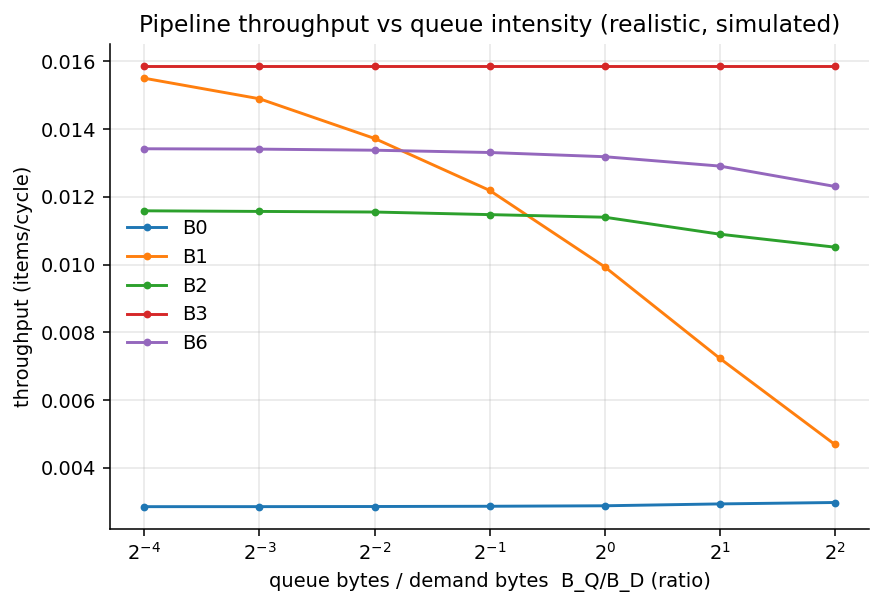
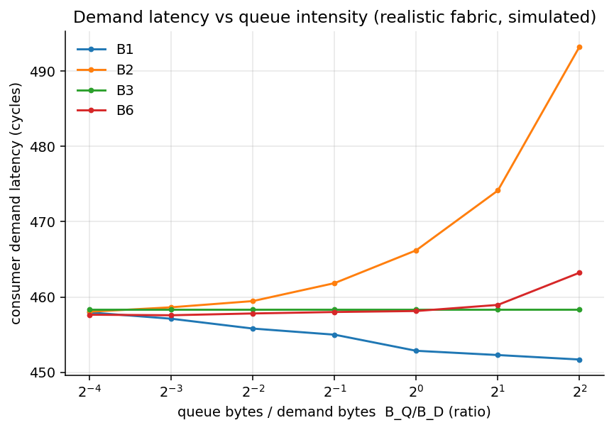
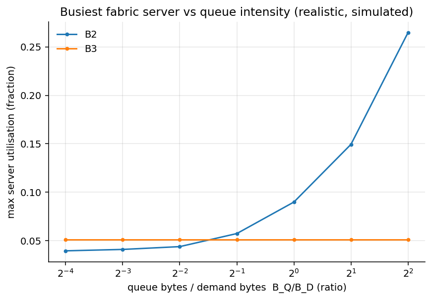
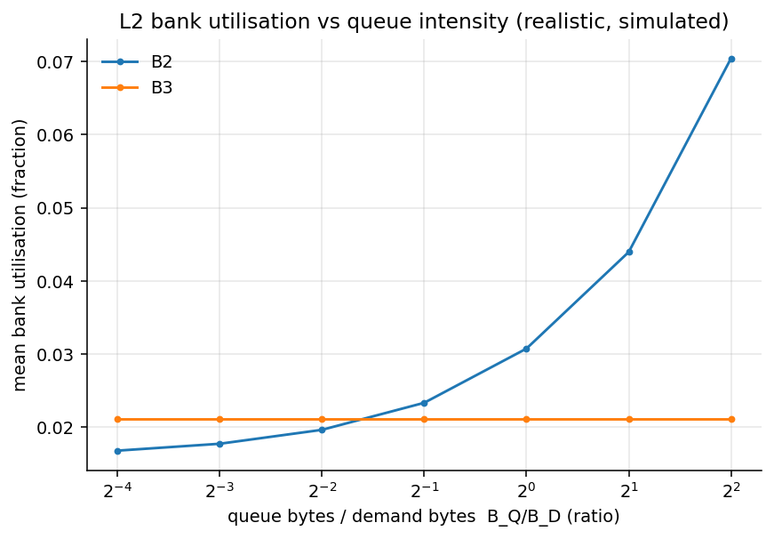
7.2 The two real severe axes
| Severe region | Experiment | PC | Mechanism |
|---|---|---|---|
| Footprint overflow — queue storage ≥ L2 capacity | exp104/exp115 | 64% | pinned queue lines evict reusable data (demand miss rate 0.35 → 0.98), then spill |
| Cross-partition placement — queues homed on the far die half | exp108 (W11) | 49–66% | every queue op pays the ~149-cycle partition crossing |
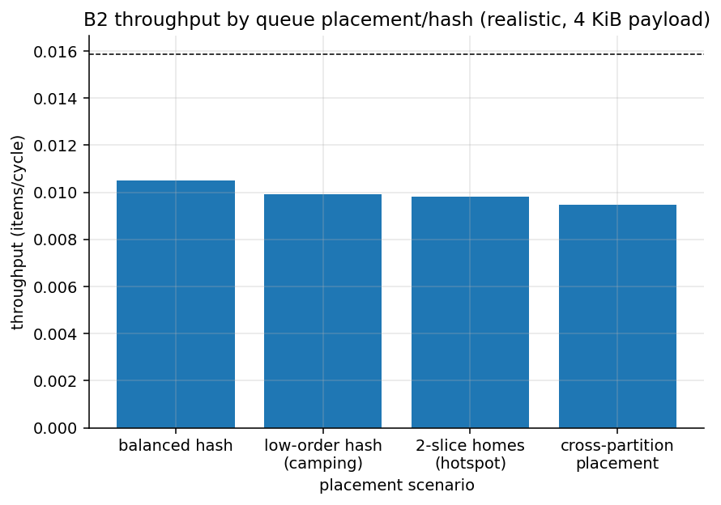
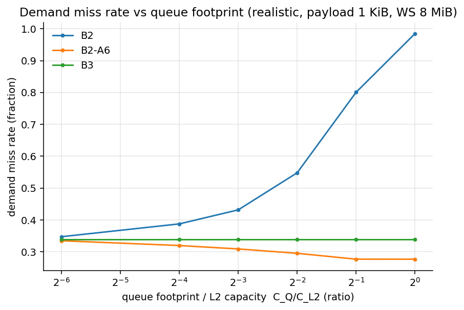
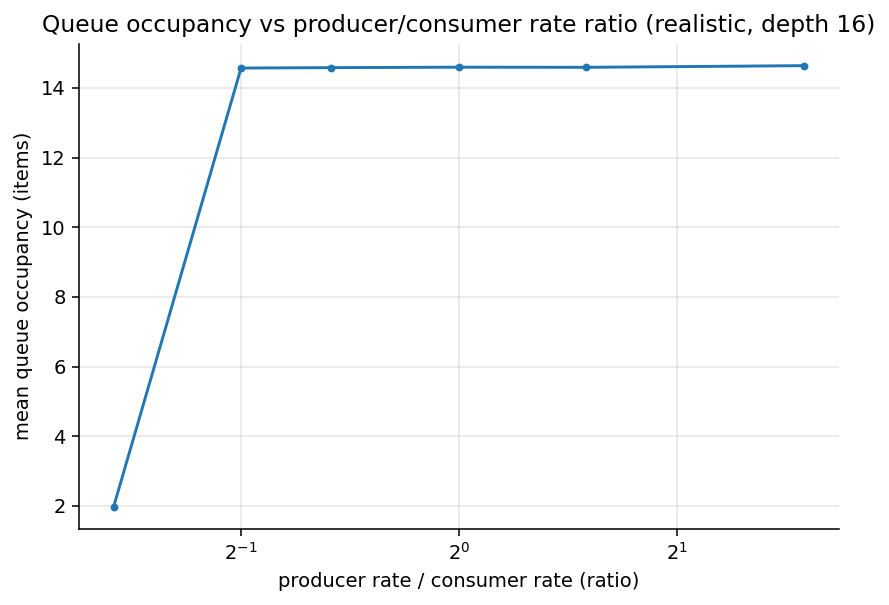
8 · Results 2 — what causes it (attribution)
The ablation battery idealizes one mechanism at a time on top of B2 (queue-heavy W4, 64 CTAs) and measures how much of the B2→B3 gap each idealization recovers:
| Idealized mechanism | v2 recovery | Interpretation |
|---|---|---|
| A5 — payload transport free | 47% | moving payload sectors at real latency is the largest cost |
| A12 — partition penalty removed (new) | 31% | die-partition crossing is a first-order mechanism v1 could not see |
| A4 — metadata/atomics free | 29% | synchronization round trips, not atomic serialization (unit peaks at 22%) |
| A2 — infinite fabric bandwidth | 8% | bandwidth is nearly irrelevant |
| A1/A3/A6/A7/A8/A13 — L2 bandwidth / capacity / bypass / QoS / hash | ≤1% | cache policy and scheduling cannot buy back wire latency |
exp109. Shares overlap (removing one bottleneck exposes the next).
9 · Results 3 — the planar ladder, including DSM-class B9
Before any 3D claim, every planar alternative gets its shot — now including the one v2's first edition could only name as a caveat: SM-side queue SRAM reached at Hopper's measured DSM latency. Gap recovery (1.0 = ideal queue), workload W1:
| Design | 128 B | 512 B | 4 KiB | 4 KiB × 48 CTAs | Verdict |
|---|---|---|---|---|---|
| B5 / A7 / A8 — VCs, priority | ≈0 | ≈0 | ≈0 | ≈0 | logical QoS cannot schedule away latency |
| B7 — slice-side SRAM + dedicated net | 0.43 | 0.42 | 0.35 | 0.35 | engines still sit across the full-latency crossbar |
| B9 — DSM-class SM-side SRAM (co-scheduled) | 0.71–0.86 | 0.68–0.83 | 0.43–0.62 | −0.41 | strongest planar — when placement cooperates and load is moderate |
| B9i — idealized any-to-any DSM | 0.74–0.82 | 0.71–0.79 | 0.45–0.58 | 0.45 | the planar upper bound |
| B9-spread — no co-scheduling | 0.43 | 0.42 | 0.30 | 0.23 | DSM reach limit forces L2 fallback → ≈B7 level |
| B8 — 3D per-SM stacked tier | 0.97–0.98 | 0.95–0.96 | 0.69–0.73 | 0.69 | best everywhere, unconditionally |
exp116 (ranges over 12–48 CTAs/side; representative columns shown). Recovery = (thrX − thrB2) / (thrB3 − thrB2).
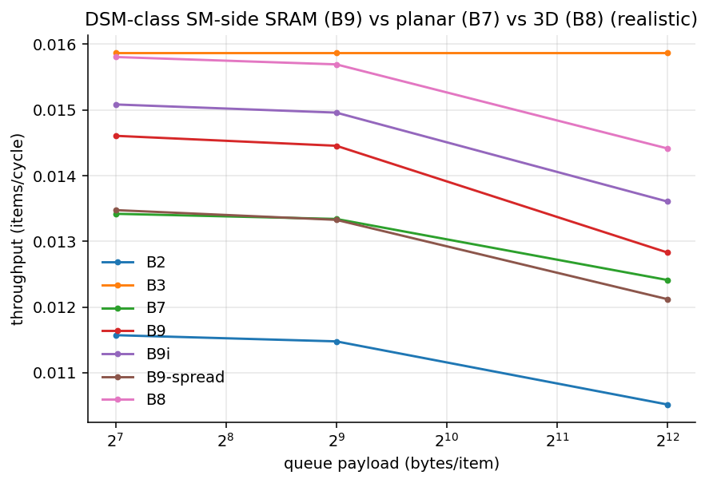
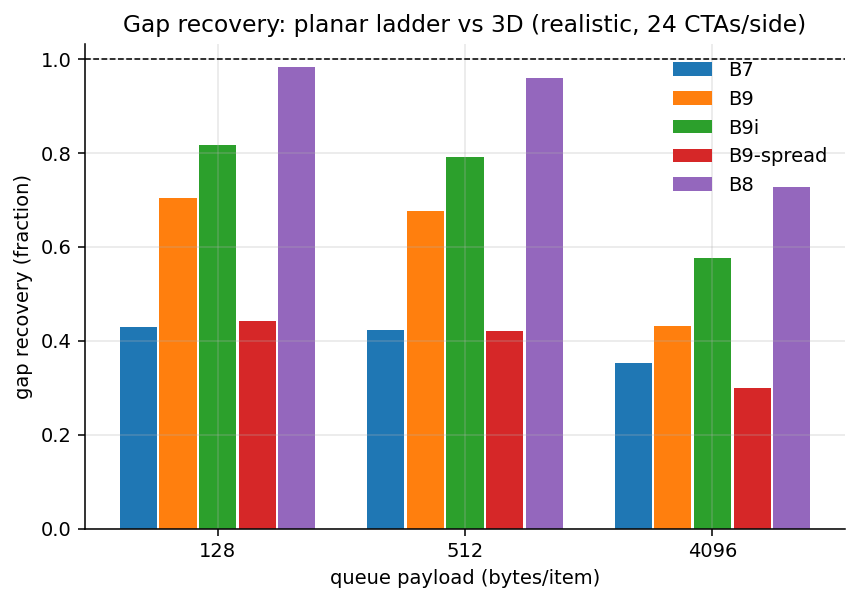
10 · Results 4 — the 3D design space
10.1 Where the portals are, and what is stacked
"3D queue fabric" is not one design. Six variants differ in where the vertical portals are (how a CTA physically reaches the stacked die) and what is stacked (payload, metadata, or both). Gap recovery (exp113, W1):
| Design | Portal / placement | 256 B | 1 KiB | 4 KiB | Verdict |
|---|---|---|---|---|---|
| 3D-D | one vertical link per SM; payload+metadata stacked | 0.98 | 0.92 | 0.73 | best everywhere |
| 3D-E | one link per 2-SM cluster | 0.97 | 0.91 | 0.70 | ≈3D-D — TPC-level sharing is fine |
| 3D-B | payload stacked, metadata stays in L2 (posted atomics) | 0.98 | 0.92 | 0.73 | payload latency is the active ingredient |
| 3D-C | metadata stacked (hardware events), payload stays in L2 | 0.43 | 0.41 | 0.33 | ≈B7; v1's "cheap big win" demoted |
| 3D-A | portals at L2-slice nodes (queue ops cross the crossbar first) | 0.41 | 0.39 | 0.33 | ≈B7, pointless |
| 3D-F | one global portal for the whole chip | 0.73 | 0.69 | 0.31 | viable at small payloads, degrades at 4 KiB (v1's "worse than nothing" softened) |
| B7 / B9 / B9i (references) | planar: slice-side / DSM / idealized DSM | 0.42 / 0.69 / 0.80 | 0.41 / 0.64 / 0.75 | 0.35 / 0.43 / 0.58 | the bars to clear |
10.2 How much vertical capability does it need? Very little.
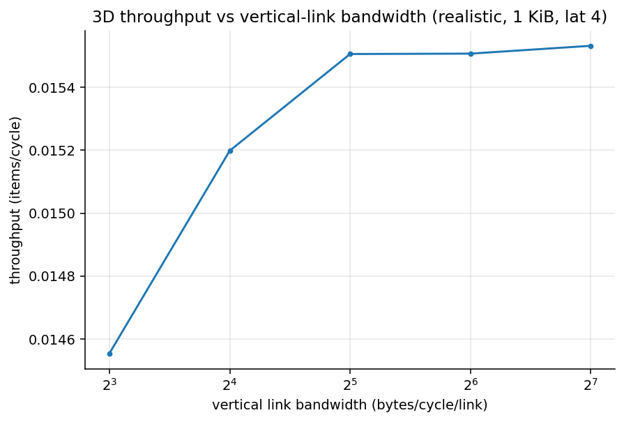
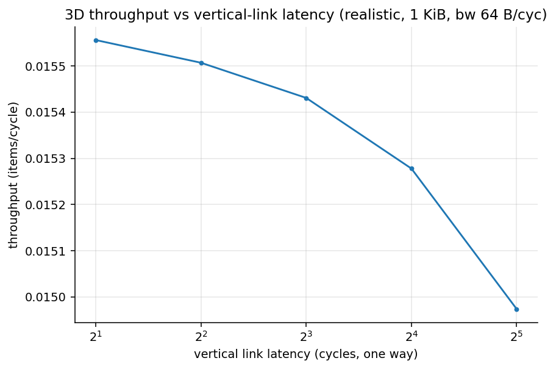
10.3 Energy
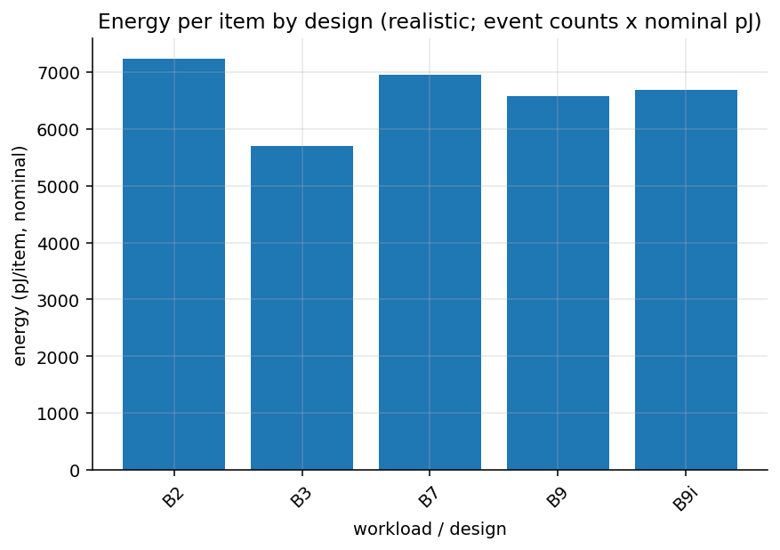
11 · Results 5 — the benefit-region map
The study's single most important artifact: penalty and payoff mapped over queue
intensity (payload) × queue depth (which sets the L2 footprint, annotated
fp per cell as a fraction of L2 capacity). exp115.
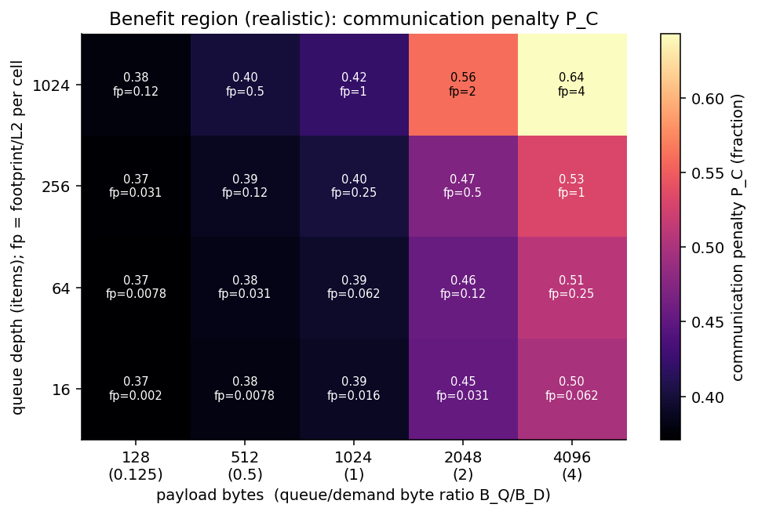
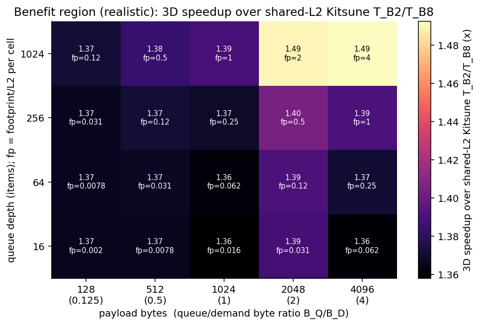
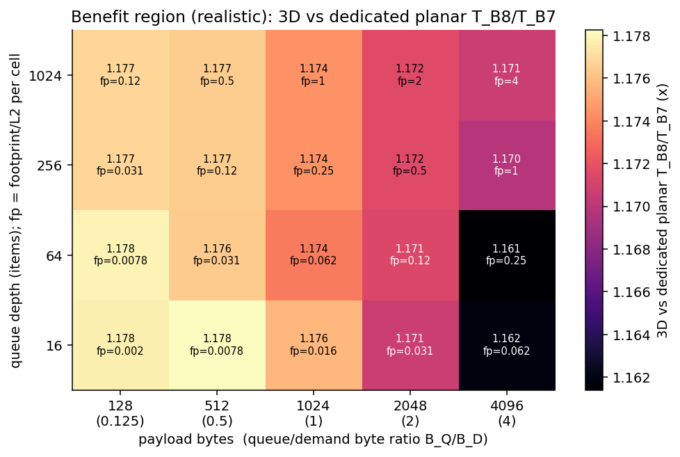
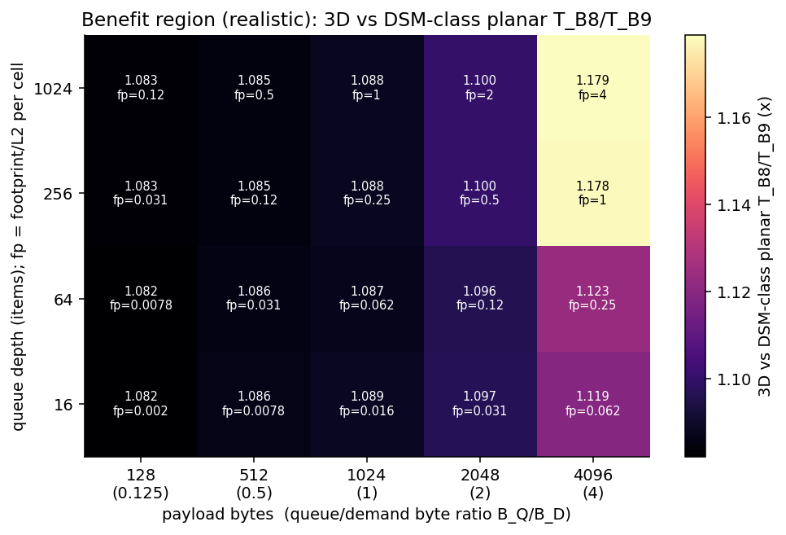
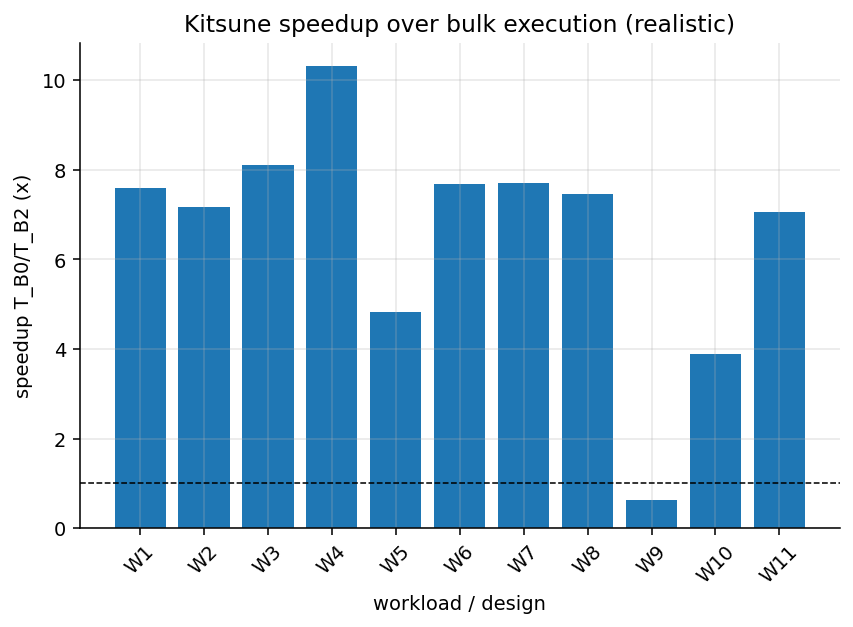
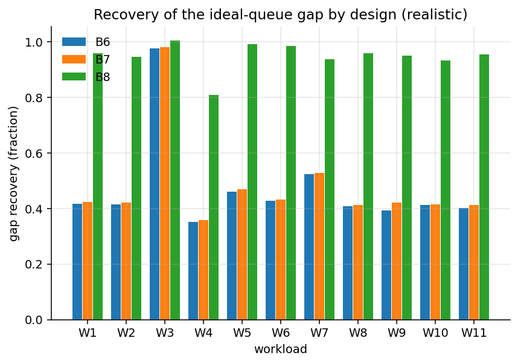
12 · What changed vs v1, and why
The v1 pilot (preserved here) used a 4×4-mesh NoC and an unsectored L2 — conventional simulator choices that a source-tagged reference compiled from real-silicon measurement papers (MICRO'24 NoC characterization, the validated Accel-Sim memory model, Hopper/A100 partitioned-L2 microbenchmarks) showed to be exactly the field's known modeling pitfalls. Key claims were spot-verified against the public papers before rebuilding:
| v1 model | Measured reality (source) | Consequence for conclusions |
|---|---|---|
| 4×4 2D mesh | hierarchical crossbar with per-level input speedup; uniform bandwidth, non-uniform latency (JIN24) | v1's 271% hotspot collapse was a mesh artifact — now 6–10% |
| uniform ~40–60-cycle latency | 175–248-cycle round trips + ~149-cycle far-partition penalty (JIN24/LUO25/ALP26) | the tax doubled and became a floor; partition crossing emerged as 31% of the gap |
| 128-B line requests | 32-B sectors, line fill = 4 transactions (KHA18) | request counts and bandwidth shape were 4× off |
| naive write-allocate | lazy fetch-on-read write policy (KHA18) | phantom DRAM reads removed |
| no die partitions | A100-style 2 partitions, near/far classes (LUO25) | an entire cost mechanism was missing |
| no acceptance gates | "network wall" asserts + measured-anchor tests (JIN24 Impl.#4) | a model that can't stream >85% DRAM overstates every NoC effect |
Findings that survived realism: QoS ≈ 0; pollution separable via bypass; payload transport as the top cost; physical isolation beating logical isolation; the design ordering planar < 3D. Findings that did not: the hotspot collapse, the atomic-saturation cliff, 3D-F "worse than nothing", metadata-only stacking as the cheap win, and W9's "Kitsune loses" (now 1.18× on an execution-time basis). Each is labeled on the v1 page where it occurs.
13 · Cross-simulator validation
A single simulator proving its author's hypothesis is worth little. The plan requires trend agreement (same direction and shape, not identical numbers) across independently-built platforms, plus explanations for every disagreement.
13.1 What the platforms agree on (realistic battery)
| Claim | Analytical | Custom DES | SST | BookSim |
|---|---|---|---|---|
| PC is latency-dominated and grows with payload | predicted floor | 37% → 51% | 24% → 67% | n/a (no pipeline) |
| Demand latency ~flat below saturation (no victim effect) | predicted | ≈flat | ≈flat | flat slopes |
| Concentration is absorbed by a provisioned fabric | — | 6–10% | — | tight-channel tree still collapses — quantifying the v1 artifact itself |
| Logical QoS does not isolate | — | A7/A8/B5 ≈ 0 | — | priority helps mildly, never isolates |
| Vertical isolation complete; portal count is the constraint | endpoint term | 3D-F degrades at 4 KiB | — | per-TPC portals flat (15.0→15.7 cyc over 16× rate); global portal saturates |
13.2 SST bracket (exp111, merlin crossbar, MESI-coherent L1 queues)
SST's PC payload trend brackets the custom simulator's: 24% → 67% vs 37% → 51% — below at small payloads (coherent L1s keep hot queue lines close), above at large ones (coherence ping-pong). The two codebases implement different queue mechanisms (L2 atomics vs coherent-line migration) that bracket real Kitsune from below and above; matching trends across that gap is the strongest validation this pilot can offer without hardware.
13.3 Known disagreements, explained (not hidden)
| Disagreement | Explanation |
|---|---|
| SST's absolute PC differs ~2× at matched configs | MESI queue-line migration + shared-line metadata is a costlier mechanism than L2 atomics; bracketing is intentional |
| Analytical saturation onset later than DES | M/D/1 has no finite buffers, MSHR caps, or store-and-forward serialization; ordering matches, onset is optimistic |
| BookSim absolute latencies tiny | network-only cycles, no cache/memory; used for slopes only, open-loop by construction |
14 · Negative results — kept on purpose
The project charter treats negative results as first-class outcomes.
15 · Final verdict and region table
The plan defines five possible endings: A strong support, B conditional support, C planar is sufficient, D wrong bottleneck, E problem too small. The realistic evidence lands on Conclusion B — conditional support, strengthened: the favorable region is essentially all communication-bound pipelines on a partitioned die (broad-based, not corner-case); the slice-side planar ceiling is ≈42%; the strongest planar competitor (B9, now measured rather than assumed) reaches 62–86% only under cluster co-scheduling at moderate load and fails outright in the queue-heavy corner; the 3D tier recovers 92–98% unconditionally with −16% communication energy. Conclusion A (unconditional) is withheld for two remaining reasons: no hardware calibration behind the latency floor, and untested thermal/area feasibility of stacking.
Region table (realistic battery; Kitsune-vs-bulk on execution-time basis)
| Workload region | Kitsune vs bulk | PC | Main bottleneck | Best planar fix (recovery) | 3D (recovery / vs B7) | 3D justified? |
|---|---|---|---|---|---|---|
| Balanced pipeline (W1) | 7.1× | 38% | queue-path latency | B9 if co-schedulable (0.68–0.71); else B7 (0.42) | 0.96 / 1.18× | Yes |
| Queue-heavy (W4) | 9.3× | 73% | payload latency + partition crossing | B7 (0.36) — B9 fails here | 0.81 / 1.17× | Yes — strongest |
| Demand-heavy (W5) | 5.0× | 23% | demand latency dominates | B9 (0.7–0.8) / B7 (0.47) | 0.99 / 1.16× | Marginal (small gap, strong planar) |
| Metadata-heavy (W6) | 7.2× | 37% | round-trip latency (not atomics) | B9 / B7 (0.43) | 0.99 / 1.17× | Yes |
| Pollution / overflow (W7) | 7.2× | 62% | pinned-line pollution + spill | bypass (pollution only); B7 0.53 | 0.94 / 1.17× | Yes (stacked capacity unique) |
| Hotspot / camping (W8) | 7.0× | 41% | not a hotspot problem anymore | B7 (0.41) | 0.96 / 1.17× | Yes (same as baseline) |
| Cross-partition placement (W11) | 6.6× | 49% | partition-crossing penalty | affinity placement first; then B9/B7 | 0.95 / 1.17× | Yes — placement-insensitive |
| Consumer-starved (W3) | 7.7× | 17% | producer rate | any engine (≈0.98) | 1.0 / ≈1.0× | No — planar suffices |
| Multi-stage (W9) | 1.18× | 39% | chained latency + stage split; B9 clusters can't chain | B7 (0.42) | 0.95 / 1.16× | Qualified yes (thin margin over bulk) |
Kitsune-vs-bulk magnitudes are synthetic-pipeline numbers on a realistic memory system; published Kitsune reports 1.3–2.4× on real applications.
Design guidance, if pursued
Build 3D-D or 3D-E: one vertical link per SM or per TPC, stacked payload banks first (3D-B captures nearly the full benefit), hardware enqueue/dequeue with credit/ready events, posted-enqueue support in software. Requirements are mild: 8 B/cycle vertical links lose only ~6%, 32-cycle vertical latency ~4%. Keep the non-cacheable bypass policy for the pollution axis regardless. Do placement affinity first on partitioned dies — it removes the 31% partition term for free. If stacking is off the table, the best planar path is DSM-class SM-side queue storage plus cluster-aware scheduling — accepting its queue-heavy failure mode and placement fragility.
Recommended next steps (in value order)
- Scale study — rerun the battery at 2×/4×/8× system size (the v3 ladder) to test whether the latency-floor story and the B8-vs-B9 margin survive at full-GPU scale.
- Hardware microbenchmarks on a real GPU (queue round trip, DSM window, victim curves) to calibrate the latency floor that carries the conclusion.
- An Accel-Sim case study of W4/W7/W11-like pipelines with real warps/occupancy.
- Thermal and area feasibility of SRAM stacked over a hot GPU die.
16 · Limitations & reproducibility
Limitations (the reasons every number is a trend, not a prediction)
- No hardware calibration. All latency anchors are source-derived from published microbenchmarks, not measured on this project's hardware (none available).
- No end-to-end GPU execution model. Warp scheduling, occupancy, register pressure out of scope (gem5/Accel-Sim skipped with recorded justification).
- Scaled system (~1/8 of a large GPU): 16 SMs, 8 MiB L2 — the v3 scale ladder addresses this next.
- Bracketed queue mechanism: L2-atomic queues (custom) vs coherent-L1 queues (SST); real Kitsune sits between.
- B9 favors planar by construction: free co-scheduling, event semantics on its fallback path, no SM-scratchpad capacity/occupancy charge — the B8-vs-B9 margin is a lower bound.
- Posted-enqueue window (2) is a software-pipelining assumption.
- Energy = event counts × nominal pJ; no layout, no thermal model.
- Synthetic workloads; Kitsune-vs-bulk magnitudes are not comparable to published application results.
Reproducibility
Every experiment directory stores its config.yaml, random seed, git
commit hash, raw outputs, parsed CSVs, and regenerable plots. The custom simulator
ships a 29-test validation suite: 18 invariants plus 11 measured-anchor gates
(sector write/read semantics, latency-structure correlation, streaming DRAM
utilisation >85%, slice-saturation provisioning, DSM latency anchors, B9
cluster-fallback conservation, scale-ladder construction). Batteries: v1 =
exp001–015 (mesh model, preserved), v2 = exp101–116 (realistic model,
this page). Tooling: Python 3.10.12, SST 15.0.0 from source, BookSim2 master + a
two-pattern local patch, g++ 11.4. The research repository (separate from this
website) contains full simulator source, experiment records, per-simulator
DESIGN/VALIDATION/RESULTS documents, and phase reports PHASE_00–PHASE_08.
Source papers & docs: Kitsune (arXiv:2502.18403), WASP (HPCA 2024), 3DLS (IEEE CAL 2026), StreamDQ (arXiv:2607.08993), TokenStack (arXiv:2605.05639), NVIDIA Hopper/CUDA documentation, MICRO 2024 GPU-NoC microbenchmarking (JIN24), the validated GPU memory model behind Accel-Sim (KHA18), Hopper/A100 dissection (LUO25/MEI17/JIA18), GPU NoC design-space studies (BAK10/ALP26). Reported numbers from those papers are cited in the research repo's literature review and were never copied into this study's projections.